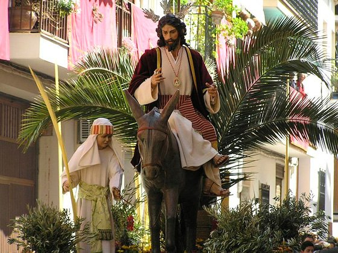
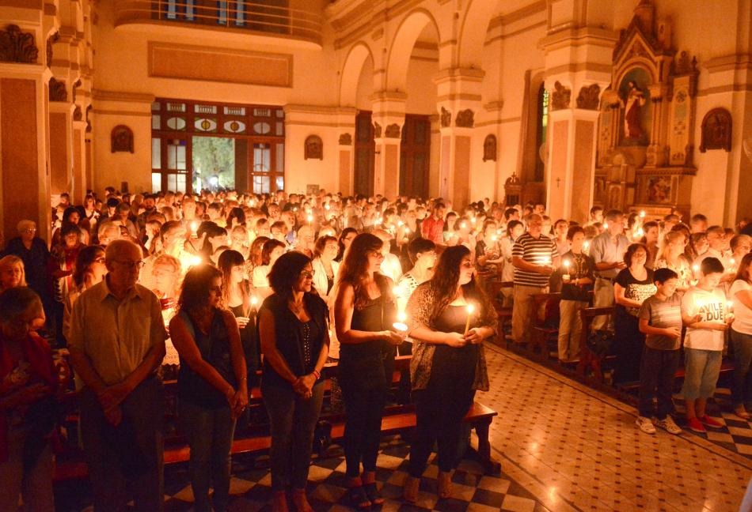
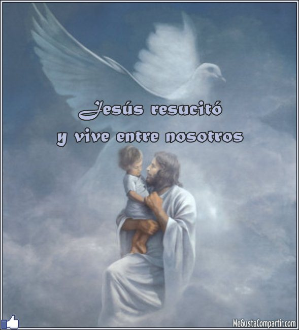

La creencia principal del cristianismo es que Dios envió a su hijo Jesús al mundo para redimir al humano de sus pecados. Para lograr esto, Jesús murió en una cruz como sacrificio, tomando el lugar del pecador.Semana Santa, conocida como semana mayor, es un período de 7 días que comienza con el Domingo de Ramos y culmina con el Domingo de Resurrección es una observación religiosa que se enfoca en la muerte y resurrección de Jesucristo. Esta celebración cristiana ocurre durante la temporada de la pascua porque es cuando se recuerda los eventos principales que forman la base de esta fe.Los evangelios nos explican como este acto se desenvolvió: Jesús fue acusado, fue arrestado, fue juzgado y condenado a muerte. Aunque era inocente, murió como un criminal en la cruz y después fue sepultado en una tumba. Al tercer día resucitó y, de acuerdo a la Biblia, cientos de personas fueron testigos de esto
Más información
El Domingo de Ramos es aquel en el que los cristianos conmemoran la entrada de Jesús de Nazaret en Jerusalén, aclamado por una multitud exultante, días antes de su pasión, muerte y resurrección, según testimonian los cuatro evangelios canónicos. Dicho domingo es el pórtico espiritual de la Semana Santa. La fecha de su celebración es movible, enmarcada en el lapso de los meses de marzo o abril.

Como tal, el Jueves Santo celebra la última cena de Jesús de Nazaret con sus discípulos, la institución de la eucaristía, la orden sacerdotal y, el lavatorio de pies. En este día, los católicos realizan la visita de los siete templos o iglesias, con el objetivo de agradecer a Dios el don de la eucaristía y sacerdocio.

El Viernes Santo, recuerda la Pasión de Cristo, momento de su crucifixión en el Calvario, por salvar al hombre del pecado y darle vida entera. Se celebra con un viacrucis y con la adoración de la Cruz.

Se conoce como Sábado Santo el día entre la muerte y la resurrección de Jesús. En este día, se lleva a cabo una vigilia pascual, en la cual se acostumbra bendecir el agua y encender las velas en señal de la Resurrección de Jesús.

El Domingo Santo, conocido como Domingo de Pascua. En el Domingo Santo, se conmemora la resurrección de Jesucristo al tercer día después de su crucifixión y, su primera aparición a los discípulos. Este día es de suma alegría para los fieles y, es interpretado como la esperanza de una nueva vida.
